컷신 단계에 NoFocus, 이벤트 재생 중 카메라 고정. (캡처 없음: 화면 변화가 카메라 동작이라 직접 플레이 확인 필요)
탐험에서는 해제. 우상단에 "배속 ×1.5" 고정 표시.
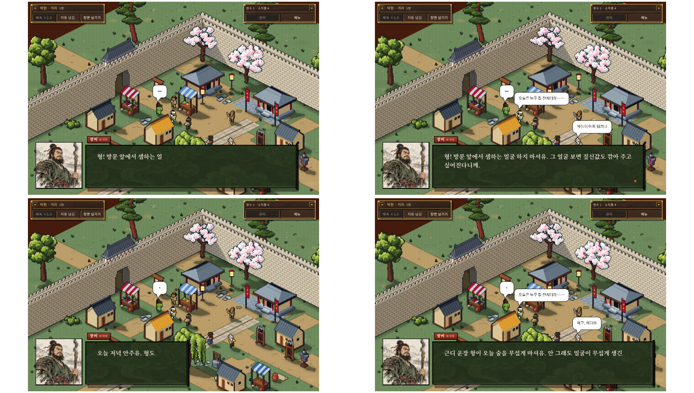
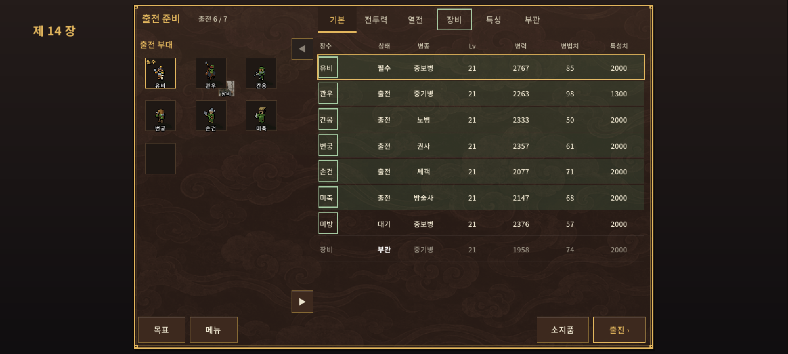
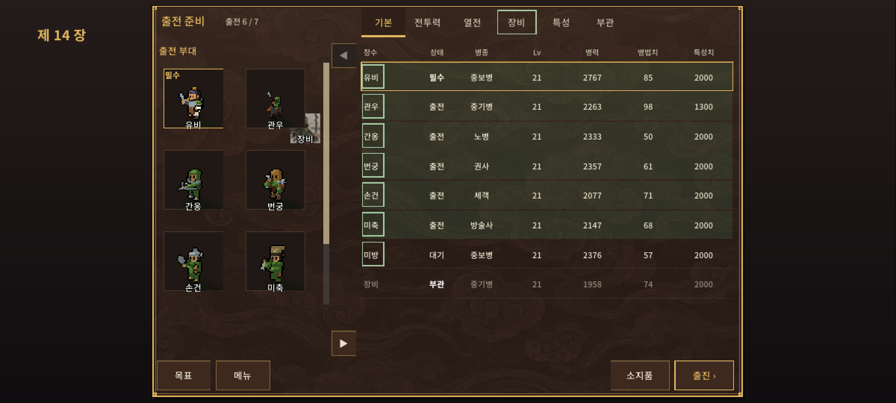
2차 수정: 카드를 창 크기와 무관한 고정 크기로, 도트는 정수 2배 고정(칸이 모자라면 스크롤).
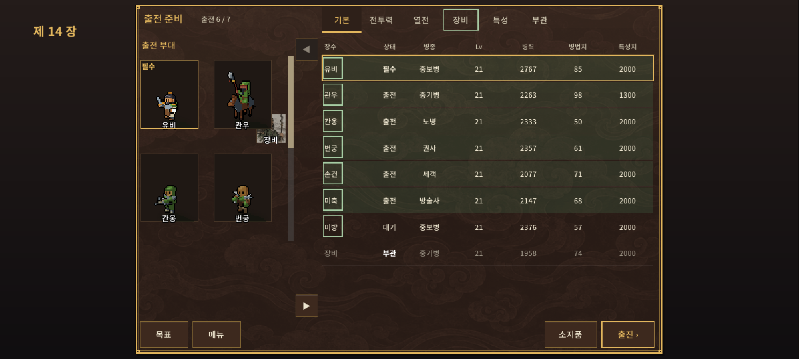
3차 수정: 이름이 카드 안에 들어오게, 부관 칸은 항상 전면(평소 어둡게, 마우스·선택 시 즉시 밝게, 0.2초 어두워짐).
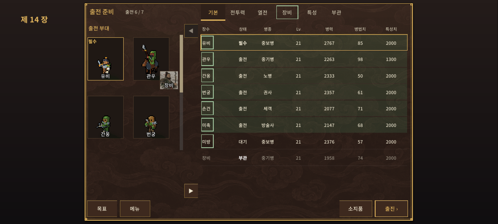
4차 수정: 이름 위쪽 가운데, 부관 칸 (60%,60%)~(110%,110%).
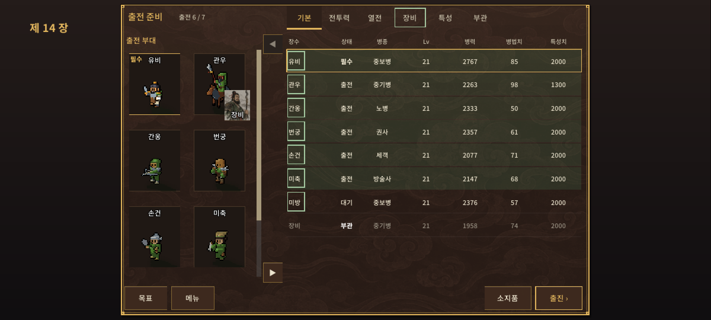
5차 수정: 부관 칸 정사각형·둥근 모서리(초상은 위쪽 정사각 크롭, 비면 +).
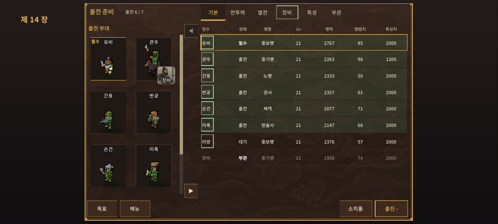
원술군(군장·보물)/원소군(소문 확인) 말풍선 데이터 반영. (캡처 미확인)
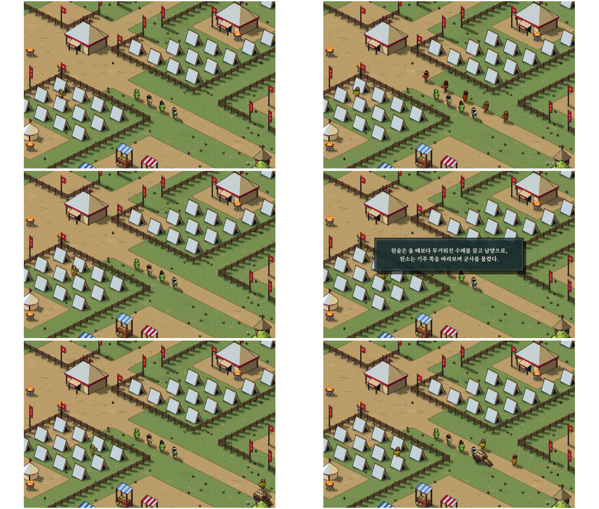
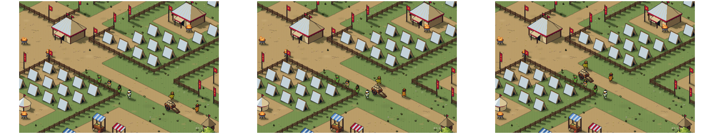
탁군·8장·14장·19장 예 주점/도구점/대장간 입구. (캡처 미확인)
주점 → 성문 → 주둔지 → 무기 관리, 조건별 변형. (조건 후 화면 미확인)
초반 대사 교체, 문추·기병은 여울 건넘/4턴에 등장 후 전군 공격. (자동 AI 0/5는 수정 전과 동일, 실제 흐름 미확인)
왼쪽부터: 이전 원소 | 새 원소 | 이전 원술 | 새 원술(살 조금 붙임)
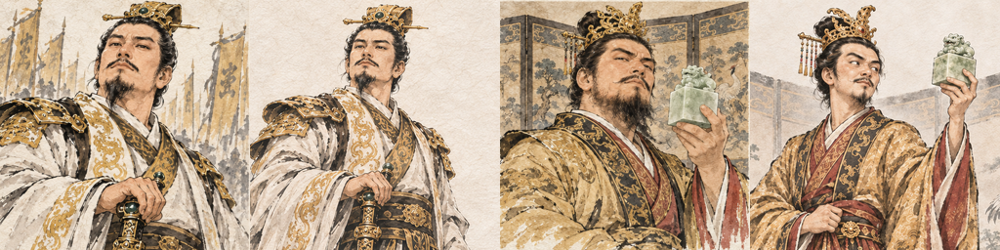
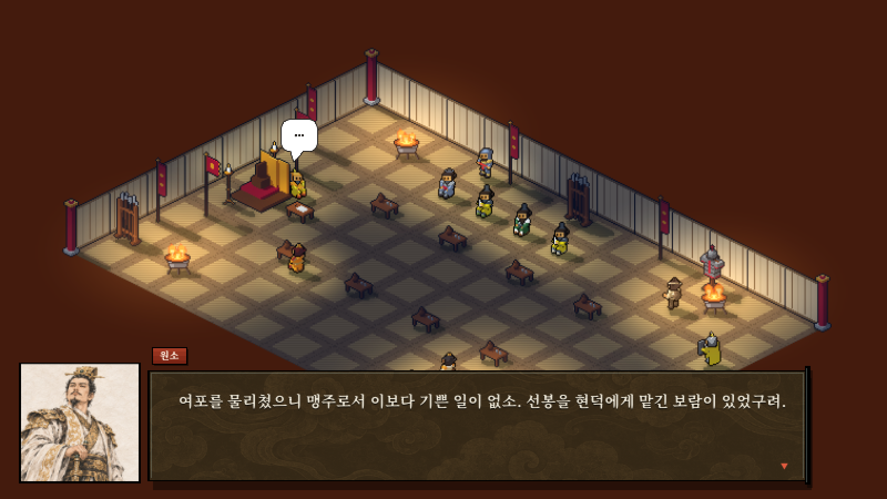

자세한 내용은 README.md
그림 카드 + 우하단 원형 부관 메달, 그림=선택·⇄/+=부관 임명. 빌드 태그 mobile로 크기 분기(메달 56→72(카드 면적 약 35%), 스왑 20→40). (폰은 우측 표를 줄여 2열)
PC
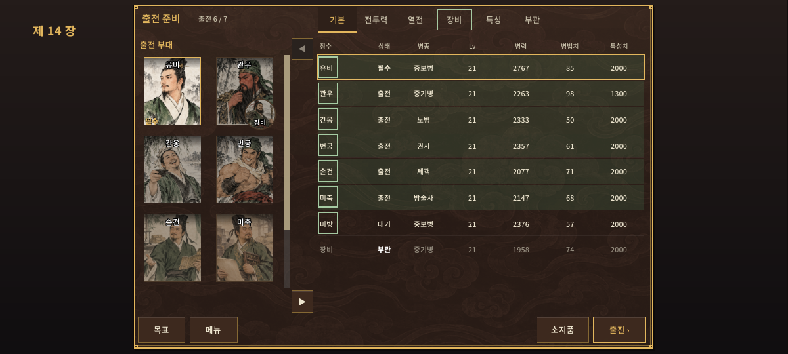
모바일 (UIDEMO_TAGS=mobile)
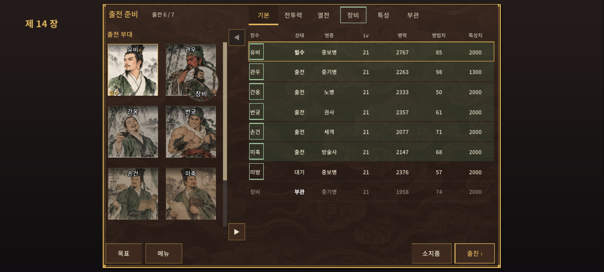